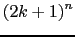
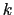
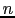

Next: Controls
Up: Interface tabs
Previous: Interface tabs
Param
This page contains the following parameters:
- input image name: select the input image name from the list of global image variables or BrowseImage to load a new image from disk,
- dt: time-step for the PDE,
- T: total diffusion time,
- Neighborhood: size of the local window from computing local statistics is  where  is the neighborhood size and  is the image dimension (2 for 2D, 3 for 3D, etc ).
- Scheme type: explicit or semi-implicit numerical scheme.
- Equation type:
- Scalar diffusion parameters
- Matrix diffusion parameters
Karl Krissian
2010-05-26